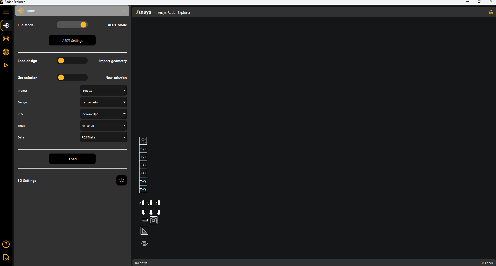
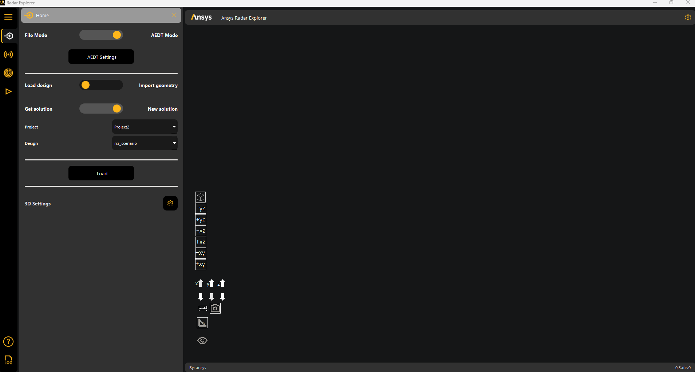
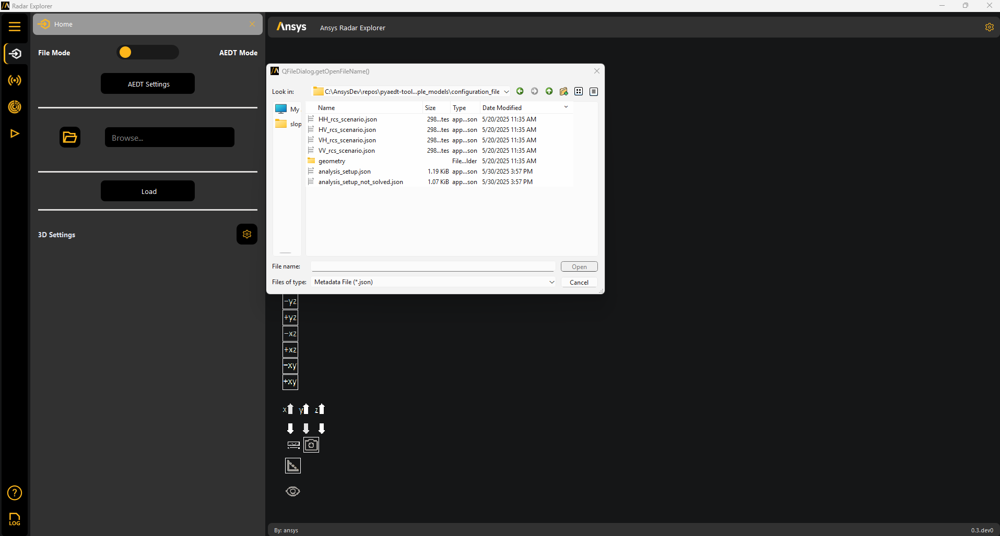

Workflows#
The Home panel provides workflows to perform these tasks:
Note
The workflows for importing a geometry, loading a solved HFSS design, and duplicating an HFSS design are available only when the Radar Explorer Toolkit is connected to AEDT. For more information, see Settings.
The Home panel also lets you access 3D settings. For more information, see Access 3D settings.
Import a geometry#
Use this workflow to import a geometry file into the toolkit’s plotter window and HFSS:
Go to the Home panel on the left sidebar.
Set the toggles to AEDT Mode and Import geometry.
Click the file icon to browse to and select a geometry file.
Supported formats include STL, OBJ, GLTF, and GLB.
Edit the material, which must be available in HFSS materials, and position the geometry relative to the global coordinate system.

Click Load to import the selected geometry.
The Load button becomes unavailable to prevent redundant uploads.
Once loaded, the geometry appears in the plotter window and is also available in HFSS.


Change 3D settings if needed. For more information, see Access 3D settings.
Start radar configuration. For more information, see Radar configuration.
Load a solved HFSS design#
Use this workflow to load a solved HFSS SBR+ design into the toolkit:
Go to the Home panel on the left sidebar.
Set the toggles to AEDT mode and Load design.
Ensure that you are connected to an active AEDT session with a solved design open.
The design detail text boxes automatically populate with the relevant data from the connected session.
Set the toggle to Get solution.
Click Load to load the solved HFSS SBR+ design.
If the results load correctly, In the menu, two additional panels become available for 3D and 2D postprocessing:

For more information, see 3D postprocessing and 2D postprocessing.
Change 3D settings if needed. For more information, see Access 3D settings.
{kind=link}
Note
Once the design loads, you cannot modify the radar configuration.
Duplicate an HFSS design#
Use this workflow to duplicate an HFSS SBR+ design:
Go to the Home menu on the left sidebar.
Set the toggles to AEDT Mode and Load design.
Ensure that you are connected to an active AEDT session with a solved HFSS SBR+ open.
The design detail text boxes automatically populate with data from the connected session.
Set the toggle to New solution.
Click Load to load the solved HFSS SBR+ design.

In the menu, two additional panels become available for 3D and 2D postprocessing. For more information, see 3D postprocessing and 2D postprocessing.
Change 3D settings if needed. For more information, see Access 3D settings.
Start radar configuration. For more information, see Radar configuration.
{kind=link}
Load an analysis setup file#
Use this workflow to reload previous work by importing an analysis setup file or radar metadata file.
Note
These files, generated by the toolkit when a simulation launches, are located in the *YourProjectName*.pyaedt directory.
If the file contains results, you do not need to connect to HFSS.
If the file contains results, you cannot modify the radar configuration.
Go to the Home panel on the left sidebar.
Set the toggle to File Mode.
Click the file icon to browse to and select an exported data file.
In the menu, two additional panels become available for 3D and 2D postprocessing. For more information, see 3D postprocessing and 2D postprocessing.
Change 3D settings if needed. For more information, see Access 3D settings.
{kind=link}
Access 3D settings#
Access the 3D settings panel by clicking the gear icon in the Home panel:

The 3D settings shown under Model settings and Plot settings depend on whether an object or solved data is loaded. For either an object or solved data, the Projection setting can be Perspective or Orthographic.
3D model and plot settings for an object#
Under Model settings, these settings are available for an object:
Name: Name of the object.
Show: Whether to show the object.
Color: Color to show the object in. You can choose from PyVista color options.
Opacity: Value between 0 (transparent) and 1 (opaque).
Under Plot settings, these settings are available for an object:
Solution: Name of the solution.
Name: Name of the object, which is read-only.
Show: Whether to show the object.
Colormap: Color mapping for the results.

3D model and plot settings for solved data#
Under Model settings, these settings are available for solved data:
Color: Color to show the data in.
Opacity: Value between 0 (transparent) and 1 (opaque).
Under Plot settings, these settings are available for solved data:
Show: Whether to show the data.
Colormap: Color mapping for the results.
Opacity: Choose from available PyVista opacity options